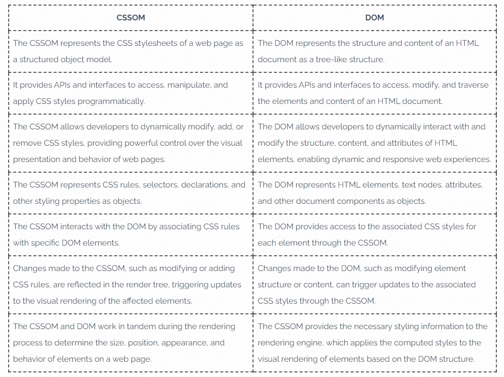
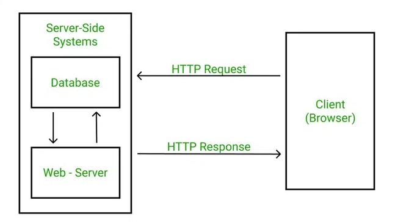
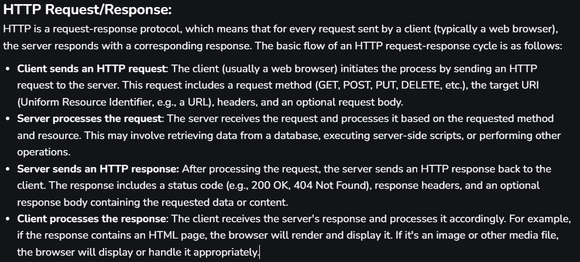

Day - 1 : Introduction to Web Browsers and Web
MERN Training
CRUD
C - Create
R - Read
U - Update
D - Delete
If a website can do the aboves, we can consider it as web application.
HTML - Hyper Text Markup Language
CSS - Cascading Style Sheets
JS - JavaScript
Browser - Window
DNS - Domain Name Server
HTTP - Hyper Text Transfer Protocol
HTTPS - Hyper Text Transfer Protocol with Security
Introduction to web Browser, Wars, DOM tree, CSSOM tree
The Browser Wars were a period of intense competition between web browsers, primarily Netscape Navigator and Microsoft Internet Explorer, in the 1990s.
Netscape initially dominated the market, but Microsoft's aggressive bundling of Internet Explorer with Windows led to a rapid shift in market share.
This competition spurred innovation in browser technology and ultimately shaped the modern internet landscape.
Browser internals - HTML parser
When a browser receives an HTML document, it goes through several steps to render the content on your screen. Here's a simplified overview of the process:
Loading: The browser fetches the HTML content from the server or local storage.
Tokenization: The HTML content is broken down into tokens. Tokens are the smallest units of meaningful data, such as tags ("div"), attributes (class="example"), and text nodes.
Lexical Analysis: The tokens are analyzed to ensure they conform to the syntax rules of HTML. This step helps in identifying the structure and elements of the document.
Tree Construction:
DOM Tree: The tokens are used to build the Document Object Model (DOM) tree. The DOM tree represents the structure of the HTML document as a tree of nodes, where each node corresponds to an element or piece of content in the HTML.
CSSOM Tree: If there are CSS styles, a CSS Object Model (CSSOM) tree is also constructed to represent the styles.
Rendering Tree: The DOM and CSSOM trees are combined to create the Render Tree. The Render Tree contains only the nodes required for rendering the page, excluding non-visual elements like "head" or elements with display: none.
Layout: The browser calculates the position and size of each element in the Render Tree. This step is also known as "reflow."
Painting: Finally, the browser paints the pixels on the screen based on the calculated layout.
CSS parser

JavaScript V8 engine
The V8 JavaScript engine, developed by Google, is a high-performance open-source engine designed to execute JavaScript code efficiently.
Initially created for the Google Chrome web browser, V8 has become a key component in various applications and platforms, showcasing its versatility.
V8 employs a Just-In-Time (JIT) compilation technique, translating JavaScript code into machine code right before execution.
This approach significantly boosts performance, allowing V8 to dynamically optimize code based on runtime characteristics.
The engine incorporates advanced features like inline caching, hidden classes, and adaptive optimizations, contributing to its ability to execute JavaScript rapidly.
Memory management is handled by V8's garbage collector, responsible for reclaiming unused resources and ensuring efficient memory utilization.
Beyond Chrome, V8 has found widespread adoption, notably in the Node.js runtime environment, where its speed and adaptability have made it a preferred choice for server-side JavaScript applications.
Its continual evolution, marked by regular updates and enhancements, solidifies V8's position as a leading JavaScript engine, influencing the overall performance and responsiveness of JavaScript applications across diverse domains.
Internals IP – MAC address – Ports & Evolution of HTTP
An internal IP address, also known as a local IP address, is assigned by your local network router and is only visible to other devices within your local network
A MAC address (Media Access Control address) is a unique identifier assigned to a network interface controller (NIC) for use as a network address in communications within a network segment.
Port is a logical address of a 16-bit unsigned integer that is allotted to every application on the computer that uses the internet to send or receive data.
Request & Response cycle
 